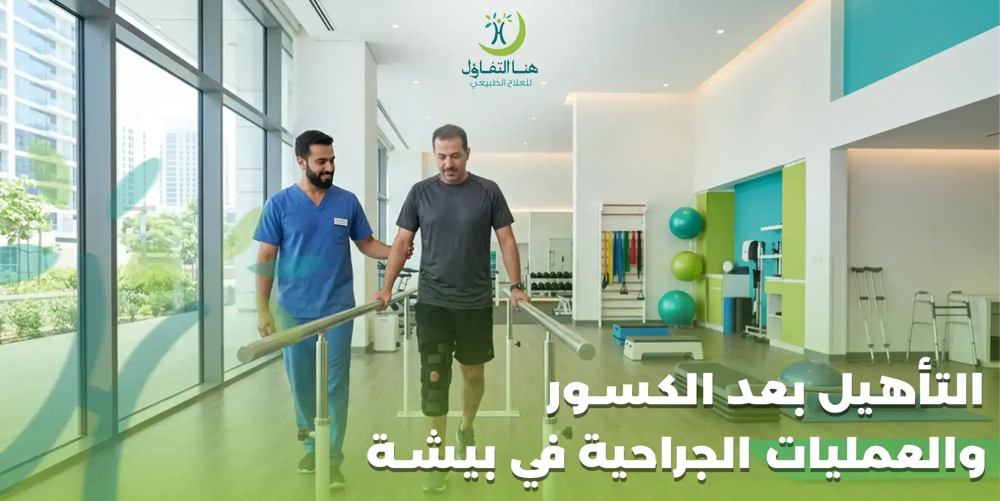

انتهاء العملية الجراحية أو التئام الكسر لا يعني انتهاء رحلة العلاج، فمرحلة التأهيل والعلاج الطبيعي هي الخطوة التي تساعد المريض على استعادة الحركة والعودة إلى حياته الطبيعية بأفضل صورة ممكنة. فالكثير من المرضى يعانون بعد العمليات أو الكسور من ضعف العضلات، وتيبس المفاصل، وصعوبة الحركة نتيجة فترة الراحة أو استخدام الجبس، وهنا يأتي دور العلاج الطبيعي في إعادة تأهيل الجسم بشكل تدريجي وآمن.
في مركز هنا التفاؤل للعلاج الطبيعي في بيشة نقدم برامج متخصصة في التأهيل بعد الكسور والعمليات الجراحية، تعتمد على تقييم شامل للحالة ووضع خطة علاجية تناسب احتياجات كل مريض، مع متابعة مستمرة لمراحل التحسن للوصول إلى أفضل مستوى وظيفي ممكن.
إذا كنت تبحث عن علاج طبيعي بعد العمليات في بيشة أو تحتاج إلى إعادة تأهيل بعد الكسور، فإن فريقنا يعمل على تقييم حالتك بدقة ووضع برنامج علاجي يناسب عمرك، ونوع العملية أو الكسر، وحالتك الصحية العامة.
لماذا يعد التأهيل بعد الكسور والعمليات الجراحية مهمًا؟
بعد أي كسر أو تدخل جراحي تبدأ أنسجة الجسم في التعافي، ولكنها تحتاج إلى إعادة تدريب حتى تستعيد كفاءتها. فعدم الحصول على برنامج تأهيلي مناسب قد يؤدي إلى ضعف العضلات، وقلة مرونة المفاصل، وصعوبة العودة إلى الأنشطة اليومية أو الرياضية.
ويهدف العلاج الطبيعي إلى:
- استعادة مدى الحركة الطبيعي.
- تقليل الألم والتيبس.
- تقوية العضلات المحيطة بالمفصل أو المنطقة المصابة.
- تحسين التوازن والثبات.
- إعادة تأهيل الحركة بصورة تدريجية.
- المساعدة على العودة للحياة اليومية والعمل بأمان.
- تقليل احتمالية حدوث مضاعفات مرتبطة بقلة الحركة.
ولهذا السبب يوصي الأطباء غالبًا ببدء برنامج العلاج الطبيعي في الوقت المناسب وفقًا لنوع الإصابة أو العملية الجراحية.
ماذا يشمل برنامج التأهيل في مركز هنا التفاؤل؟
لا يعتمد مركز هنا التفاؤل على برنامج موحد لجميع المرضى، بل يتم تصميم خطة علاجية خاصة بكل حالة وفقًا للتقييم الأولي، ونوع العملية أو الكسر، والعمر، والقدرة الحركية.
ويشمل البرنامج عادةً:
- تقييم شامل للحالة.
- قياس مدى حركة المفاصل.
- تقييم قوة العضلات.
- تحديد مستوى الألم.
- تصميم برنامج علاجي فردي.
- جلسات علاج طبيعي منتظمة.
- تمارين منزلية لدعم نتائج العلاج.
- متابعة دورية لقياس التحسن وتطوير الخطة.
ويهدف البرنامج إلى تحقيق أفضل تحسن ممكن بصورة تدريجية وآمنة.
الحالات التي يشملها برنامج التأهيل
يقدم مركز هنا التفاؤل في بيشة برامج إعادة تأهيل للعديد من الحالات، من أهمها:
وتختلف الخطة العلاجية من حالة لأخرى بما يتناسب مع طبيعة الإصابة ومرحلة التعافي.
العلاج الطبيعي بعد تغيير مفصل الركبة
تعد جراحة تغيير مفصل الركبة من العمليات التي تحتاج إلى برنامج تأهيلي منظم، حيث يهدف العلاج الطبيعي إلى تحسين حركة المفصل وتقوية العضلات المحيطة به، بالإضافة إلى المساعدة على استعادة القدرة على المشي وصعود السلالم وممارسة الأنشطة اليومية بصورة تدريجية.
في مركز هنا التفاؤل يتم تصميم برنامج تأهيلي يناسب حالة المريض، مع متابعة مستمرة لمراحل التحسن، والحرص على تطوير التمارين وفق استجابة الحالة.
ويهدف البرنامج إلى:
- • استعادة مدى حركة الركبة.
- • تقوية عضلات الفخذ والساق.
- • تحسين المشي والتوازن.
- • تقليل الألم والتورم.
- • العودة للأنشطة اليومية بأمان.
العلاج الطبيعي بعد تغيير مفصل الورك
بعد جراحة تغيير مفصل الورك يحتاج المريض إلى إعادة تأهيل تساعده على تحسين الحركة وتقوية العضلات واستعادة التوازن، مع الالتزام بالإرشادات المناسبة للحركة خلال فترة التعافي.
ويركز البرنامج العلاجي على تحسين الأداء الوظيفي للمفصل، وتقليل التيبس، والمساعدة على العودة إلى الأنشطة اليومية بشكل آمن.
العلاج الطبيعي بعد عملية الرباط الصليبي
تعد إصابات الرباط الصليبي من أكثر الإصابات التي تحتاج إلى برنامج تأهيلي دقيق بعد الجراحة، حيث يعتمد نجاح العملية بشكل كبير على مرحلة إعادة التأهيل. ويهدف العلاج الطبيعي إلى استعادة حركة الركبة بشكل تدريجي، وتقوية العضلات المحيطة بها، وتحسين التوازن والثبات، بما يساعد المريض على العودة لممارسة أنشطته اليومية أو الرياضية بأمان.
في مركز هنا التفاؤل للعلاج الطبيعي في بيشة يتم تصميم برنامج تأهيلي يناسب كل مرحلة من مراحل التعافي، مع متابعة مستمرة للتأكد من تحقيق أفضل تقدم ممكن وفق حالة المريض.
التأهيل بعد تثبيت الكسور
بعد تثبيت الكسور باستخدام الشرائح أو المسامير أو الجبائر، قد يعاني المريض من ضعف في العضلات أو محدودية في حركة المفاصل نتيجة فترة التثبيت. لذلك يساعد العلاج الطبيعي على استعادة الوظيفة الطبيعية للطرف المصاب بصورة تدريجية.
ويشمل برنامج التأهيل:
- تحسين مدى حركة المفاصل.
- تقوية العضلات المحيطة بمكان الإصابة.
- تقليل التيبس.
- تحسين التوازن.
- تدريب المريض على استخدام الطرف المصاب بصورة صحيحة.
- المساعدة على العودة للنشاط اليومي تدريجيًا.
العلاج الطبيعي بعد إزالة الجبس
إزالة الجبس لا تعني انتهاء العلاج، فبعد فترة التثبيت قد تصبح العضلات أضعف، وقد تقل مرونة المفاصل بشكل ملحوظ، لذلك يحتاج المريض إلى برنامج تأهيلي يساعده على استعادة الحركة الطبيعية.
ويركز العلاج الطبيعي بعد إزالة الجبس على:
- زيادة مرونة المفصل.
- تحسين قوة العضلات.
- تقليل الألم عند الحركة.
- تحسين التوازن.
- استعادة الاستخدام الطبيعي للطرف المصاب.
ويتم تنفيذ التمارين بصورة تدريجية بما يتناسب مع حالة كل مريض.
التأهيل بعد جراحات الكتف
قد يحتاج المرضى بعد عمليات الكتف إلى برنامج تأهيلي يساعدهم على استعادة مدى الحركة وتقوية العضلات المحيطة بالمفصل، خاصةً في الحالات التي تتطلب فترة تثبيت بعد الجراحة.
ويهدف البرنامج إلى:
- تحسين حركة الكتف.
- تقليل الألم والتيبس.
- زيادة القوة العضلية.
- تحسين القدرة على رفع الذراع.
- استعادة الأنشطة اليومية بصورة تدريجية.
ويتم تحديد نوع التمارين ووقت البدء بها وفقًا لتوصيات الطبيب المعالج وتقييم أخصائي العلاج الطبيعي.
التأهيل بعد جراحات اليد والرسغ
تلعب اليد دورًا أساسيًا في جميع الأنشطة اليومية، لذلك فإن إعادة التأهيل بعد العمليات الجراحية أو الكسور في اليد والرسغ تساعد على استعادة الوظيفة الحركية بصورة أفضل.
ويشمل البرنامج:
- تحسين حركة الأصابع والرسغ.
- تقوية عضلات اليد.
- تحسين القبضة.
- تقليل التورم والتيبس.
- المساعدة على العودة للأعمال اليومية.
التأهيل بعد جراحات القدم والكاحل
بعد العمليات أو الكسور التي تصيب القدم أو الكاحل، قد يحتاج المريض إلى إعادة تدريب على المشي وتحسين التوازن وتقوية العضلات، خاصة بعد فترات عدم تحميل الوزن.
ويهدف العلاج الطبيعي إلى:
- تحسين حركة الكاحل.
- زيادة قوة العضلات.
- تحسين التوازن.
- تدريب المريض على المشي بصورة صحيحة.
- تقليل الألم وتحسين الأداء الحركي.
كيف يتم تقييم الحالة في مركز هنا التفاؤل؟
قبل بدء البرنامج التأهيلي، يقوم أخصائي العلاج الطبيعي بإجراء تقييم شامل يشمل جميع الجوانب التي تؤثر في خطة العلاج، وذلك لضمان تصميم برنامج يناسب احتياجات كل مريض.
ويتضمن التقييم:
- مراجعة التقارير الطبية والأشعة.
- معرفة نوع العملية أو الإصابة.
- قياس مدى حركة المفاصل.
- تقييم قوة العضلات.
- تقييم التوازن والمشي.
- تحديد مستوى الألم.
- مناقشة أهداف المريض واحتياجاته اليومية.
وبناءً على نتائج التقييم يتم إعداد خطة علاجية فردية تتناسب مع مرحلة التعافي.
التقنيات المستخدمة في برامج التأهيل
يعتمد البرنامج العلاجي على احتياجات كل حالة، وقد يشمل استخدام مجموعة من الوسائل العلاجية الحديثة لدعم عملية التأهيل، مثل:
ويتم اختيار الوسائل المناسبة وفق تقييم الأخصائي، مع متابعة مستمرة لتطور الحالة.
متى تبدأ جلسات العلاج الطبيعي؟
يعتمد توقيت بدء جلسات العلاج الطبيعي على نوع العملية أو الكسر وتوصيات الطبيب المعالج، إذ تختلف خطة العلاج من حالة إلى أخرى. ويحرص فريق مركز هنا التفاؤل على التنسيق مع الخطة العلاجية الموضوعة لضمان بدء التأهيل في الوقت المناسب وتحقيق أفضل استفادة ممكنة من البرنامج.
فوائد العلاج الطبيعي بعد الكسور والعمليات الجراحية
يعد العلاج الطبيعي جزءًا أساسيًا من رحلة التعافي بعد الكسور والعمليات الجراحية، حيث يساعد على استعادة الوظيفة الحركية بصورة تدريجية، ويعمل على تحسين أداء العضلات والمفاصل بما يتناسب مع حالة كل مريض.
ومن أبرز فوائد العلاج الطبيعي بعد العمليات والكسور:
- • تحسين مدى حركة المفاصل.
- • تقوية العضلات التي ضعفت خلال فترة الراحة.
- • تقليل التيبس وصعوبة الحركة.
- • تحسين القدرة على المشي والحركة.
- • زيادة التوازن والثبات.
- • المساعدة على أداء الأنشطة اليومية بسهولة.
- • دعم العودة إلى العمل أو ممارسة الرياضة وفق تقييم الحالة.
- • تحسين جودة الحياة خلال فترة التعافي.
ولهذا يُوصى بالبدء في برنامج التأهيل في الوقت المناسب وفقًا لتعليمات الطبيب وأخصائي العلاج الطبيعي.
مراحل برنامج التأهيل بعد الكسور والعمليات
في مركز هنا التفاؤل للعلاج الطبيعي في بيشة يتم تقسيم البرنامج التأهيلي إلى مراحل، بحيث تحقق كل مرحلة هدفًا محددًا قبل الانتقال إلى المرحلة التالية.
المرحلة الأولى: تقليل الألم واستعادة الحركة
خلال هذه المرحلة يتم التركيز على تقليل الألم وتحسين حركة المفصل بصورة تدريجية، مع المحافظة على سلامة مكان الجراحة أو الكسر.
المرحلة الثانية: تقوية العضلات
بعد تحسن الحركة يبدأ التركيز على تقوية العضلات المحيطة بالمفصل أو الطرف المصاب، بهدف زيادة الثبات وتحسين الأداء الوظيفي.
المرحلة الثالثة: تحسين التوازن والحركة
يتم تدريب المريض على الحركة بطريقة صحيحة، وتحسين التوازن والتناسق العضلي، بما يساعده على أداء الأنشطة اليومية بصورة أكثر كفاءة.
المرحلة الرابعة: العودة للنشاط
في المرحلة الأخيرة يتم إعداد المريض للعودة إلى أنشطته اليومية أو المهنية أو الرياضية تدريجيًا وفق تقييم الأخصائي.
متى تظهر نتائج العلاج الطبيعي؟
يختلف معدل التحسن من شخص لآخر، حيث يعتمد على عدة عوامل، منها:
- • نوع الإصابة أو العملية.
- • عمر المريض.
- • الحالة الصحية العامة.
- • الالتزام بحضور الجلسات.
- • تنفيذ التمارين المنزلية.
- • الاستجابة للعلاج.
وقد يشعر بعض المرضى بتحسن في الحركة وتقليل الألم خلال الأسابيع الأولى، بينما تحتاج بعض الحالات إلى فترة أطول للوصول إلى أهدافها العلاجية.
لماذا تختار مركز هنا التفاؤل للتأهيل بعد الكسور والعمليات؟
يحرص مركز هنا التفاؤل للعلاج الطبيعي في بيشة على تقديم برامج تأهيل تعتمد على أحدث أساليب العلاج الطبيعي، مع الاهتمام بتقديم رعاية فردية لكل مريض.
✓ تقييم شامل
قبل بدء العلاج لتحديد احتياجات كل مريض.
✓ برامج تأهيل مخصصة
مصممة لكل حالة بناءً على نوع العملية أو الكسر.
✓ أخصائيون مؤهلون
في العلاج الطبيعي والتأهيل الحركي.
✓ أجهزة وتقنيات حديثة
لدعم عملية التأهيل وتحسين النتائج.
✓ متابعة مستمرة
لمراحل التحسن وتعديل الخطة عند الحاجة.
✓ بيئة علاجية مريحة
تهدف إلى راحة المريض وسلامته.
الأسئلة الشائعة حول التأهيل بعد الكسور والعمليات في بيشة
كم تستغرق فترة التأهيل بعد العملية الجراحية؟
تعتمد مدة البرنامج التأهيلي على نوع العملية والحالة الصحية للمريض ومدى استجابته للعلاج، ويتم تحديد المدة التقريبية بعد التقييم الأولي.
هل أحتاج إلى العلاج الطبيعي بعد إزالة الجبس؟
في كثير من الحالات يساعد العلاج الطبيعي بعد إزالة الجبس على تحسين حركة المفصل وتقوية العضلات واستعادة الاستخدام الطبيعي للطرف المصاب.
هل يمكن العودة إلى ممارسة الرياضة بعد انتهاء التأهيل؟
يعتمد ذلك على نوع الإصابة أو العملية، ويحدد أخصائي العلاج الطبيعي الوقت المناسب للعودة إلى النشاط الرياضي بعد تقييم الحالة والتأكد من جاهزية المريض.
هل تختلف خطة التأهيل من مريض لآخر؟
نعم، فلا توجد خطة علاجية واحدة تناسب جميع المرضى، لأن احتياجات كل حالة تختلف باختلاف نوع الإصابة أو العملية الجراحية، والعمر، والحالة الصحية، ومستوى النشاط اليومي.
ماذا يحدث عند تأخير العلاج الطبيعي؟
يؤدي تأخير بدء برنامج التأهيل في بعض الحالات إلى زيادة صعوبة استعادة الحركة بصورة طبيعية، كما قد يؤدي إلى استمرار ضعف العضلات أو تيبس المفاصل لفترة أطول.
احجز موعدك في مركز هنا التفاؤل للعلاج الطبيعي ببيشة
إذا كنت تبحث عن التأهيل بعد الكسور في بيشة أو تحتاج إلى العلاج الطبيعي بعد العمليات الجراحية، فإن مركز هنا التفاؤل يوفر برامج تأهيل متخصصة تساعدك على استعادة الحركة وتحسين الأداء الوظيفي والعودة إلى ممارسة حياتك اليومية بثقة.